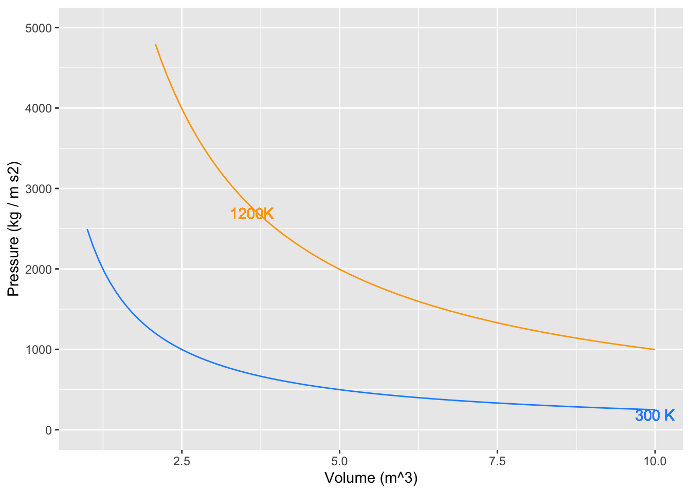
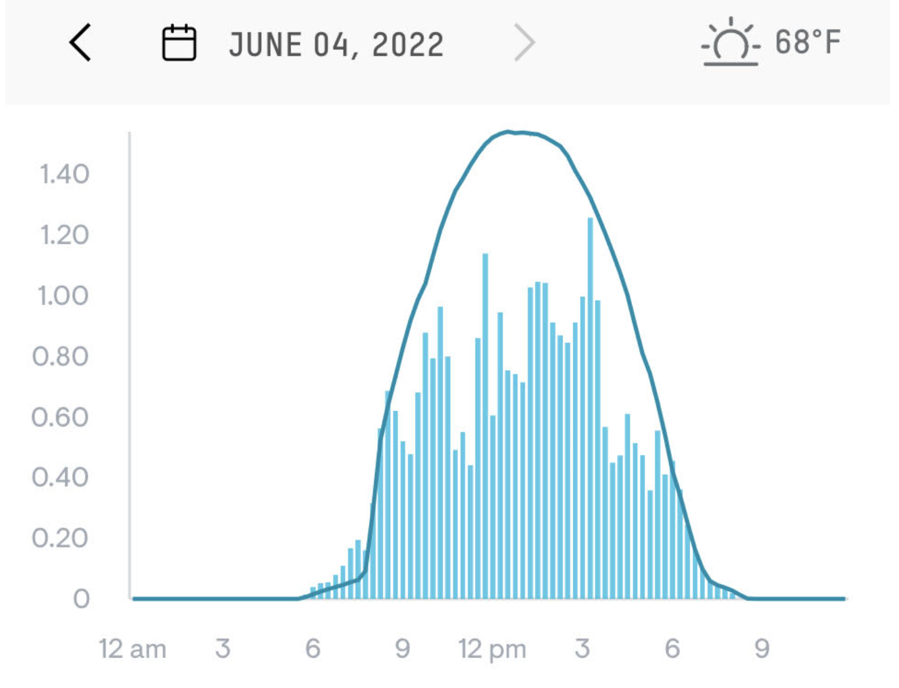

question id: calf-know-painting-1
Chap 35 Exercises
Accumulating Wind Power
\[ \newcommand{\dnorm}{\text{dnorm}} \newcommand{\pnorm}{\text{pnorm}} \newcommand{\recip}{\text{recip}} \]
Exercise 1 As you know, \[\int_a^c f(x) dx = \int_a^b f(x) dx + \int_b^c f(x) dx\\ \text{and}\\\int_a^c f(x) dx = - \int_c^a f(x) dx\ .\]
Here are some definite integrals for which, without stating anything more about the function, we give you the numerical result.
| \(\int_{2}^{7} f(x) \,dx = -8\) | \(\int_{-6}^{-2} g(x) \,dx = 3\) |
| \(\int_{2}^{12} f(x) \,dx = -14\) | \(\int_{0}^{2} g(x) \,dx = 1\) |
| \(\int_{2}^{7} h(x) \,dx = 5\) | \(\int_{0}^{2} h(x) \,dx = 6\) |
Consider these the facts you have to work with when answering the following questions:
- \(\int_{2}^{7} 3f(x) \,dx =\)?
-8 -42 -24 13
- \(\int_{7}^{12} f(x) \,dx =\)?
6 22 -6 -22
question id: calf-know-painting-2
- \(\int_{2}^{7} f(x) + g(x) \,dx =\)?
-3 8 -8 insufficient information to answer question
question id: calf-know-painting-3
- \(\int_{2}^{2} r(x) \,dx =\)?
-3 0 -8 insufficient information to answer question at t
question id: calf-know-painting-4
- \(\int_{-6}^{-2} \left[\strut g(x)+3\right] \,dx =\)?
6 15 12 3
question id: calf-know-painting-5
- \(\int_{12}^{7} f(x) \,dx =\)
-6 22 6 -22
question id: calf-know-painting-6
Exercise 2 Math expression 1 shows three items, all of which are equivalent even though they look different. You can see this from the equal signs separating the three items.
\[\large \int_{\color{brown}{a}}^{\color{brown}{b}} {\color{blue}{f(x)}}\, dx = {\color{magenta}{F(x)}}\left.{\LARGE\strut}\right|_{\color{brown}{a}}^{\color{brown}{b}} = {\color{magenta}{F}({\color{brown}{b}})} -{\color{magenta}{F}({\color{brown}{a}})} \tag{1}\]
When you reach the point where you can say, “That’s obvious,” and can write down the three items from memory, you will have achieved an important facility with calculus.
- Since the three items are equivalent, they are all the same kind of “thing.” What kind of thing are they?
a quantity
a function of \(x\)
an interval
an integration bound
an anti-derivative
a constant of integration
question id: three-perspectives-1
The equation has been written in color to help you identify elements that are the same in each of the three items.
- Which of the colors stands for a bound of integration?
black blue brown magenta
question id: three-perspectives-2
- Which of the colors stands for the derivative of a function that appears elsewhere in the equation?
black blue tan magenta
question id: three-perspectives-3
- Which of the colors stands for an anti-derivative of a function that appears elsewhere in the equation?
black blue tan magenta
question id: three-perspectives-4
Exercise 3 Remember our conventions for notation:
- Fixed quantities (perhaps with units)
- Symbols: e.g. \(a\), \(b\), \(c\), \(x_0\), \(t^{\star}\)
- Examples: 3.2, 4.8 meters, 17 feet/sec\(^2\)
- Names of inputs to functions
- Symbols: e.g. \(x\), \(t\), \(y\), \(u\), \(v\)
- Examples: position, time, velocity
- Functions of an input
- Symbols: e.g. \(f(x)\), \(g(t)\), \(h(x, t)\)
- Examples: position as a function of time, density as a function of position
- Functions evaluated at a specific numerical input
- Symbols: e.g. \(f(a)\), \(g(t_0)\), \(h(x^{\star}, t^{\star})\)
- Examples: velocity at the finish line, starting position
In particular, take care to distinguish between these two kinds of symbolic items:
- \(f(x)\), which means \(f()\) as a function of \(x\)
- \(f(x_0)\), which means the function \(f()\) evaluated at the specific input \(x_0\), producing a quantity (e.g., 3.5 meters/sec.)
A major source of confusion for students is that \(a\) is a constant, even though we are not yet saying specifically which numerical value that constant has. Think of \(a\) as meaning “insert constant here.” In terms of derivatives …
- \(\partial_x f(a) = 0\)
- \(\partial_x f(x)\) is a function
- \(\partial_u f(x) = 0\), since \(u\) and \(x\) are different input names.
- \(\partial_u f(u)\) is a function, the exact same function as in (ii).
With this in mind, turn to our three perspectives on a definite integral \[\large \int_{\color{brown}{a}}^{\color{brown}{b}} {\color{blue}{f(x)}}\, dx = {\color{magenta}{F(x)}}\left.{\LARGE\strut}\right|_{\color{brown}{a}}^{\color{brown}{b}} = {\color{magenta}{F}({\color{brown}{b}})} -{\color{magenta}{F}({\color{brown}{a}})}\]
- \(\color{brown}{a}\) and \(\color{brown}{b}\) are numerical constants
- \(\color{blue}{f}(x)\) and \(\color{magenta}{F}(x)\) are functions of \(x\)
- \(\color{magenta}{F}(\color{brown}{a})\) is the function \(\color{magenta}{F}()\) evaluated at the specific input \(\color{brown}{a}\), producing a quantity. Likewise \(\color{magenta}{F}(\color{brown}{b})\).
- What kind of a thing is \(F(u)\), according to our notation convention? (Hint: First figure out what kind of thing is \(u\), according to the notation conventions.)
a fixed quantity
a function of \(x\)
a function of \(u\)
a definite integral
question id: first-fundamental-theorem-1
- What kind of a thing is \(F(a)\), according to our notation convention?
a quantity
a function of \(x\)
a function of \(u\)
a definite integral
question id: first-fundamental-theorem-2
- What kind of a thing is \(F(u) - F(a)\), according to our notation convention?
a quantity
a function of \(x\)
a function of \(u\)
a definite integral
question id: first-fundamental-theorem-3
- According to our notation convention, what kind of a thing is \[\int_a^u f(x) dx \text{?}\]
a quantity
a function of both \(x\) and \(u\)
a function of \(x\)
a function of \(u\)
a definite integral
question id: first-fundamental-theorem-4
- According to our notation convention, what kind of a thing is \[\int_u^b f(x) dx \text{?}\]
a number
a function of both x and u
a function of \(x\)
a function of \(u\)
a definite integral
question id: first-fundamental-theorem-5
- According to our notation convention, what kind of a thing is \[\int_u^x f(x) dx \text{?}\]
a number
a function of both x and u
a function of \(x\)
a function of \(u\)
a definite integral
question id: first-fundamental-theorem-6
Now turn to the entities involved in the so-called “First Fundamental Theorem of Calculus.” (“Fundamental theorem” is a highfalutin way of saying something like, “This isn’t obvious at first glance, and so you should be especially careful to memorize it so that you identify it when you see it.” Another way to state it is, “Every function is the derivative of some anti-derivative.” But you knew that already, since “every function has an anti-derivative.”)
Here are the entities involved, which you will recognize as a slight modification of an earlier statement:
\[\partial_u \int_a^u f(x)dx \ \ =\ \ \partial_u \left. F(x) \right|_a^u \ \ = \ \ \partial_u \left(F(u) - F(a)\right) .\] Let’s look at the right-most expression \(\partial_u \left(F(u) + F(a)\right)\) and exploit the the derivative of a sum is the sum of the derivatives. So … \[\partial_u \left(F(u) + F(a)\right) = \partial_u F(u) - \partial_u F(a) = \partial_u F(u)\]
- Which of the following correctly justifies the step \[\partial_u F(u) - \partial_u F(a) = \partial_u F(u)\ \text{?}\]
\(F(a)\) is a constant
\(F()\) is an anti-derivative.
\(F(b)\) does not appear.
\(F(u) = \int f(x) dx\)
question id: first-fundamental-theorem-7
Taking the left-most and right-most expressions in the above equation, we have \[\partial_u \int_a^u f(x) dx = \partial_u F(u)\]
- Is there an algebraic simplification of \(\partial_u F(u)\)?
No, because it depends on what \(F(u)\) is.
Yes, because \(\partial_u F(u)\) is simply \(f(u)\).
No, because we could just as easily have written \(\partial_x F(x)\)
Yes, because it is the same thing as \(\partial_x F(x)\)
question id: first-fundamental-theorem-8
The equation \[\partial_u \int_a^u f(x) dx \ \ = \ \ f(u)\] means that “differentiation undoes integration” or, as we’ve been putting it, “differentiation undoes anti-differentiation.”
Exercise 4 In the 1660s, John Boyle made use of then-new instrumentation to measure gas pressure. He discovered what’s now called Boyle’s Law, which says that, at constant temperature in a closed system, pressure times volume is a constant:
\[PV = const\] In the 1720s, Daniel Fahrenheit developed the first reliable thermometer consisting of a column of mercury in a glass straw. He developed a temperature scale which divided the range from freezing to boiling into 180 small units, which he called “degrees,” as was traditional in measuring angles. (In 1742, Anders Celsius created another scale with freezing at 0 and 100 small units—still called “degrees”—between freezing and boiling.
With the availability of reliable thermometers, scientists started to consider the role of temperature in the relationship between pressure and volume. Their many discoveries were eventually synthesized into a “combined gas law” and then into an “ideal gas law” which famously states: \[PV = nRT .\] Here, \(n\) is “amount” of gas, quantified as the number of moles of the gas in the container, \(T\) is temperature, and \(R\) is the “ideal gas constant”: \[R = 8.314 \text{J}/(\text{K}\ \text{mol})\] The “mol” cancels out the dimension of \(n\), the \(K\) cancels out the dimension of \(T\), leaving us with \(PV\) having the dimension of energy (Joules). The temperature \(T\) is measured in degrees Kelvin, which is just like Celsius but moving the location of 0 from freezing to … Well … the hypothetical temperature when \(PV=0\), which can be estimated by extrapolating measurements of \(PV(T)\) (that is, \(PV\) as a function of \(T\)) to the \(T\) where \(PV = 0\).
- It is convenient to have specific units in mind for pressure and volume. Since \(P V\) gives energy, let’s arrange \(P\) and \(V\) to have units such that when multiplied the result is Joules. What is the expression of the dimension Joule in terms of the SI system, that is, time in seconds, length in meters, and mass in kg? Hint: use the above paragraph and knowing that the units for energy are consistent for potential, kinetic, or other types of energy.
\(kg m^2 s^{-2}\)
\(kg m / s\)
\(kg^2 m^2 s^3\)
\(m^2 / s^2\)
question id: PV-units1
- In the SI units system, volume has units of cubic meters: \(m^3\). What are the SI units for pressure in terms of kg, m, and s? The units of your answer to this question times the units for pressure should be equivilent to your answer from the previous question.
\(kg m^{-1} s^{-2}\)
\(kg m^1 s^{-2}\)
\(kg^2 m^1 s^2\)
\(m s^2 / kg\)
question id: PV_units2
For use in calculus, it is helpful to re-write the Ideal Gas Law in functional form. There are several ways to do this. For instance, if we wanted to measure the number of moles of gas in a container, we could use the function \(n(P, V, T) = PV/RT\). Here, we will focus on pressure as a function of the other quantities: \[P(n, V, T) = nRT/V.\] Now consider a very simple machine consisting of a cylinder, closed on one end and sealed by a movable piston at the other, as in this picture.

The machine in the picture is more complicated than the simple machine we want to model. The picture includes two small valves at the top of the cylinder connected each to a pipe.
Our machine has no valves and no pipes. The cylinder is charged with gas when it is manufactured. After that, nothing material goes in or out of the closed cylinder/piston system.
When you push on the cylinder, the volume available for the gas gets smaller and the pressure increases. When you let the cylinder push on you, the volume available gets bigger and the pressure decreases. The amount of gas, \(n\), never changes. For simplicity, we will imagine that \(n=1\) and that the gas is N\(_2\). This means the mass of the gas is 0.028 kg.
And, to simplify even more, let’s insist that the temperature of the cylinder and its gaseous content does not change from room temperature: 293\(^\circ\) Kelvin.

If you start in a high-volume, low-pressure state and push the piston to move to a low-volume, high-pressure state at the same temperature, you will be putting energy into the machine.
The “area” of each little box in the graph, that is, pressure times volume,
- How much energy (in Joules) corresponds to one small rectangle of area in the graph?
500 J 625 J 2500 J 25,000 J
question id: PV3
- By counting rectangles in the graph, estimate how much energy needs to be put into the machine when the volume changes from 7.5 m\(^3\) to 2.5 m\(^3\) at a temperature of 300 K?
1000 J 3000 J 5000 J 10,000 J
question id: PV4
Now that you have compressed the gas in the cylinder, by doing work on it, let’s heat up the machine to 1200K.
- What will be the pressure of the gas when the volume of the machine is 2.5 m\(^3\) at temperature 1200 K? (The units will be kg m$^{-1} \(s^{-2}\))
1000 2000 3000 4000
question id: PV5
- Starting with the machine at 1200K and a volume of 2.5 m\(^3\), how much energy will the machine transfer to you when it expands to 7.5 m\(^3\)? Estimate this by counting squares in the graph.
about 5000 J about 10,000 J about 50,000 J about 100,000 J
question id: PV6
The net work done by the machine in completing the cycle, shifting from compression at low temperature to expansion at high temperature, is the difference between the energy put out by the machine when expanding and the energy put into the machine to compress the gas. Such a machine is called a “heat engine” since it turns a source of high temperature and a source of low temperature into energy.
Evaluate the code in Active R chunk 1. The first line defines a function \(P(V, T)\) with default \(n=1\) mole of gas. Anti-differentiate \(P()\) with respect to \(V\) then calculate the energy needed to compress the cylinder at the low temperature, that is \[\int_{7.5}^{2.5} P(V, T=300) dV .\] Call this numerical result compress_energy.
Similarly, calculate the energy done by the machine in the high-temperature expansion \[\int_{2.5}^{7.5} P(V, T=1200) dV .\] Call this numerical result expand_energy.
You may want to make a graph of your \(P(V, T)\) function to check that it is right. Also, check that the integrals are right by comparing them to the rough estimate you made earlier by counting squares.
Exercise 5 The function windspeed(t) records wind speed at the site of a wind-turbine farm over one day, that is, \(0 \leq t \leq 24\) hours. The function speed2power(s) is the production function for the model of wind turbine used at the farm: the input is speed in miles per hour, the output is in kilowatts. (Both these functions were created for this exercise. They are not about a real turbine at a real wind farm, but are somewhat realistic.) Hint: you can nest a function inside of another function. For instance, if I had a function (‘solarpanelpower’) that calculates the amount of power a solar panel generates and another function (‘sunlight’) that tells me the amount of sunlight at time of the day (‘TOD’). I could evaluate this in one step like the following: ‘solarpanelpower(sunlight(TOD))’. This would give me the amount of power from the solar panel based upon the time of the day.
Your task, find the total energy generated over the 24-hour period by the turbine. Reminder: energy \(E\) is electric power multiplied by time. Or, more usefully for this problem, the increment energy \(dE\) generated at time \(t\) is the product of power at time \(t\) multiplied by the increment of time \(dt\), that is, \(dE = p(t) dt\). Consequently, \[E = \int_\text{morning}^\text{night} p(t) dt\] where “morning” should really be 00:00 h and night 24:00 h on the day in question.
We don’t have an algebraic formula for windspeed(t) even though it is a function. You can use antiD() to find the anti-derivative of the electric power function.
The answer you compute should be saved to the name result. The units will be in kWh – kilowatt hours.
- Wind turbines of this type have a maximum power rating of 5000 kilowatts. Was this rating exceeded at any point during the day?
The maximum instantaneous power was about 3500 kilowatts The maximum instantaneous power was about 1100 kilowatts That threshold was reached about 9 AM That threshold was exceeded about 8 AM The maximum instantaneous power cannot be determined from the information given.
question id: wind-power-1
- At the maximum power rating of 5000 kilowatts, what’s the theoretical maximum amount of energy produced by the turbine over a 24-hour day?
5000 * 24 kilowatt-hours 5000 / 24 kilowatt-hours 5000 kilowatts Can’t be determined from the information given.
question id: wind-power-2
- About what fraction of the theoretical maximum energy did the wind turbine generate over the 24-hour period?
About 2.5% About 10% About 25% About 50% Can’t be determined from the information given.
question id: wind-power-3
- A peak time for residential energy consumption is from 7 am to 9 am. The price at which you can sell electrical energy to the grid operator is $0.09 per kilowatt-hour. At that price, how much would the energy produced from 7-9 am be worth?
About 20 cents. About $150 About $350 About $650
question id: wind-power-4
- What’s the average wind speed over the 24-hour period?
About 5 mph About 7 mph About 9 mph
question id: wind-power-5
- Wind speed fluctuates a lot, but imagine that the wind blew steadily at the average wind speed from the previous problem. How much energy would be generated over the 24-hour period?
0 kilowatt hours
500 kilowatt hours
1000 kilowatt hours
10,000 kilowatt hours
question id: wind-power-6
Exercise 6 The (so-called) “First Fundamental Theorem of Calculus” says:
\[\partial_t \int_a^t f(x) dx \ = \ f(t)\]
Consider this new quantity: \[\partial_t \int_t^a f(x) dx\] Which of the following is a valid simplification of the quantity?
\(f(t)\)
\(f(-t)\)
\(-f(t)\)
none of the above
question id: u-on-the-bottom-1
Exercise 7 Your house has solar panels on the roof. In sunshine, these generate power. You use some of that power immediately for cooking, lighting, and such. Any power generated above your needs gets stored in a battery. Any power used above the solar generation gets supplied by the battery.
Over the course of a day, your use of power fluctuates (you use the toaster, open the refrigerator, etc). Similarly, the solar generation fluctuates as clouds pass by and the sun rises and sets in the sky. The amount of energy stored in the battery fluctuates over the day as you consume energy in your home and produce it with the solar panels.
The unit used for electrical power is a “kilowatt” (kW). An old-fashioned incandescent light bulb consumes about 0.1 kW while lighted, a modern LED bulb generates about the same amount of light using only 0.01 kW. A refrigerator uses about 0.1 kW while a hair-dryer uses about 1 kW when it is running.
Batteries store energy. The usual unit for energy is “kilowatt-hour” (kWh). A refrigerator will, over a 24-hour day, use 0.1 * 24 = 2.4 kWh. Power multiplied by time duration gives energy. If the power were constant, the energy could be calculated by a simple multiplication of the power over the duration. Since power fluctuates, we cannot do the calculation with ordinary multiplication. Instead, we have to integrate power over time.
For this activity, use the “Solar-panels” App.
Note in draft
Convert the App to ShinyLive and embed here.
- Why is it called “net production” instead of just “production?”
Because your house is connected to the utility electrical network in case you need extra power.
Because the system designer is something of a poet and wants you to think of the solar cells as a kind of fishing net harvesting photons.
Because the government will send you surplus hair nets to thank you for reducing CO2 production.
Because it is not simply production from the solar panels but production minus consumption (the solar panels require energy to run). If you ignored consumption, you would call it “gross energy produced.”
question id: panda-tear-cotton-1
- The bottom graph shows energy accumulated in the battery since midnight. What does it mean that the energy accumulated is negative?
The battery level is lower throughout the day than it was at midnight.
The battery is discharging over the entire day.
The sign is not important.
question id: panda-tear-cotton-2
- During the interval from 05:00 to 20:00, how much did the energy stored by the battery change? Highlight that interval in the beeps graph.
-2.5 kWh 1.9 kW 15 hours 1.5 kWh
question id: panda-tear-cotton-3
- Suppose the battery was holding 20 kWh at 00:00. How much energy was it holding at 15:00?
-2 kWh 18 kWh 20 kWh 24 kWh
question id: panda-tear-cotton-4
- When you choose a time interval in the beep graph, how come the energy stored (in kWh) is displayed as an area in the top graph? Keep in mind that the vertical scale of the top graph is kW, not kWh.
It is pretty.
To highlight visually the interval that was selected.
To convert kW to kWh, we are effectively multiplying the power (kW) by the time duration. Power is on the vertical axis, time duration is on the horizontal axis. Multiplying the two corresponds to the area under the graph.
question id: panda-tear-cotton-5
- How come two different colors are used to display the “area” under the net power curve?
The second derivative of the anti-derivative of \(f(t)\) is equal to \(f(t)\).
No reason related to calculus per se. We like to make graphs pretty.
Because it is not simply “area.” it is the product of net power and time duration, and sometimes this quantity is negative. The color indicates whether the quantity is positive or negative at any instant.
question id: panda-tear-cotton-6
Exercise 8 Suppose the continuous function \(f(x)\) is positive on \(x \in [0, 4]\) and negative on \(x \in [4, 8]\). Let \[F(x) \equiv \int_0^x f(u) du.\] In addition, suppose \(\int_0^8 f(x)dx < 0\).
Mark each statement as True or False.
- \(F(x)\) has to be positive on [0,4] and negative on [4, 8].
True False
question id: ups-and-downs-1
- \(F(x)\) must cross the x-axis at least once in the interval [0, 8].
True False
question id: ups-and-downs-2
- \(F(0) < F(8)\).
True False
question id: ups-and-downs-3
- \(F(x)\) is concave up on [0, 4] and concave down on [4, 8].
True False
question id: ups-and-downs-4
- \(F(x)\) has a local maximum at x = 4.
True False
question id: ups-and-downs-5
- \(F(x)\) has a point of inflection at x=4.
True False
question id: ups-and-downs-6
Exercise 9 Which of the following is NOT equivalent to \[\int_1^4\frac{1}{x}dx\ ?\]
\(\ln|x| {\Large|_{\tiny 1}^{\tiny 4}}\)
\(1.386294\)
\(\ln|4|-\ln|1|\)
\(\frac {x^0}{0} {\Large|_{\tiny 1}^{\tiny 4}}\)
question id: ape-lie-coat-1
Exercise 10
- Find the antiderivative \[\int \frac{x^2+x+1}{x}\ dx\ .\]
\(\frac{1}{2} x^2+x+\ln(|x|)+C\) \(\frac{\frac{1}{3} x^3+\frac{1}{2} x^2 +x}{\frac{1}{2}x^2}+C\) \(x\cdot(\frac{1}{3} x^3+\frac{1}{2} x^2 +x)-(x^2+x+1)\cdot (\frac{1}{2} x^2)+C\)
question id: seaweed-bend-socks-1
- Find the antiderivative \[\int \left(\frac{3}{t} - \frac{3}{t^2} \right)dt\ .\]
\(3\ln(t)+\frac{2}{t} +C\)
\(3\ln|t|+\frac{2}{t} +C\)
\(\frac{-3}{2t^2}+\frac 2 {3t^3} +C\)
\(\frac{-3}{\frac{1}{2} t^2}+\frac {2}{\frac{1}{3} {t^3}} +C\)
question id: seaweed-bend-socks-2
- Find the value of \[\int_2^4(2x+3)dx\ .\]
\(-18\) \(4\) \(12\) \(18\)
question id: seaweed-bend-socks-3
- What is the approximate value of \[\int_2^4 dnorm(x)dx\ ?\] (Hint: You will need an R session to do the numerical calculation.
\(0.02271846\) \(-0.02271846\) \(-0.05385714\) \(1.977218\)
question id: seaweed-bend-socks-4
Exercise 11 The KC-46 is an airborne fuel tanker that can receive or dispense fuel. Suppose \(x(t)\) tracks a KC-46’s fuel transfer rate, in pounds per minute, where \(t\) is measured in minutes from the start of the mission. Note that \(0 < x(t)\) when the KC-46 is receiving fuel from another tanker and \(x(t)<0\) when the KC-46 is offloading fuel to a supported aircraft.
The function \(b(t)\) tracks the KC-46’s fuel burn rate, also measured in pounds per minute, with the same interpretation of \(t\). Note that \(b(t)\) can never be negative (i.e. \(0 \leq b(t)\))
- Which of the following is the proper representation of the KC-46’s fuel state \(n\) minutes after mission start?
\(x(t)-b(t)\)
\(x(t)-b(t)+f_0\) where \(f_0\) represents the fuel level at the start of the mission.
\[\int_0^n x(t)dt-\int_0^n b(t)dt\]
\[\int_0^n x(t)dt-\int_0^n b(t)dt +f_0\] where \(f_0\) represents the fuel level at the start of the mission
question id: buck-forgive-canoe-1
- What is the meaning of \[\int_0^{120} x(t)dt=40,000\ ?\] Keep in mind that there are 60 minutes in 1 hour, so 120 minutes is 2 hours.
In the first two hours of the mission, the KC-46 offloaded a total of 40,000 pounds of fuel.
Two hours into the mission, the KC-46’s fuel tanks contain 40,000 pounds of fuel.
In the first two hours of the mission, the KC-46 received 40,000 more pounds of fuel than it offloaded.
In the first two hours of the mission, the KC-46 received a total of 40,000 pounds of fuel.
question id: buck-forgive-canoe-2
Exercise 12 Active R chunk 2 gives the function \(A(x, y)\) for the differential \(A(x,y)\,dy\,dx\) of the surface area of the tent at point (x,y).
This is more than 4 times the ground area of the domain \(-5 < x < 5, \ -5 < y < 5\) over which the tent has been raised. You can get some feel for why this is by looking at the several graphs of slices of the tent. The “ground length” in each of these plots is 10 (since they run from \(y=-5\) to \(5\).) The length of the tent material itself is given by the length of the black curve in each plot.
Modify the code in Active R chunk 2 to find the surface area of the tent over the domain \(3 < x < 5, \ 0 < y < 3\).
1. What is the area (in square meters) of the smaller domain itself? (As opposed to the surface area of the tent raised over that domain. You don't need the codebox for this question.)
```{mcq}
#| label: tent-area-1
#| inline: true
#| show_hints: true
1. 3 [ hint: Area is length times width. ]
2. 6 [ correct hint: Correct The x extent is 2, the y extent is 3, so the area is 6 ]
3. 9 [ hint: Area is length times width. ]
4. 12 [ hint: Area is length times width. ]
```2. What is the surface area (in square meters) of the part of the tent raised over the small area?
```{mcq}
#| label: tent-area-2
#| inline: true
#| show_hints: true
1. 0
2. 13 [ correct hint: Right ]
3. 27
4. 99
```Essay: The ratio of tent surface area to ground area in the small region of the tent is only about 2. For for the tent as a whole, the ratio is much bigger: about 4. Look at the contour plot of the tent height and explain why there is such a big difference in ratios.
question id: tent-area-essay
Activities
Exercise 13

Figure 2, previously used in Exercise 20 and Exercise 1, comes from the monitoring app for a photovoltaic (solar electricity) array on two consecutive days in June 2022. The vertical axis has units of kilowatts and dimension [power] L2 M / T2.
Electric utilities don’t charge for power, they charge for energy, dimension L2 M / T, which is typically denominated in units of kilowatt-hours. The local utility charges $0.14 per kilowatt-hour. For each of the two days, what was the money value of the energy produced by the solar array. (Your answer can be rough, but aim to be within $$10%.)
- June 3:
- June 4:
Hint: Find the value for June 4 first. That will make the June 3 estimate easier.
No answers yet collected